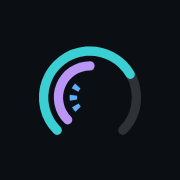
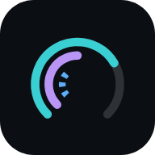
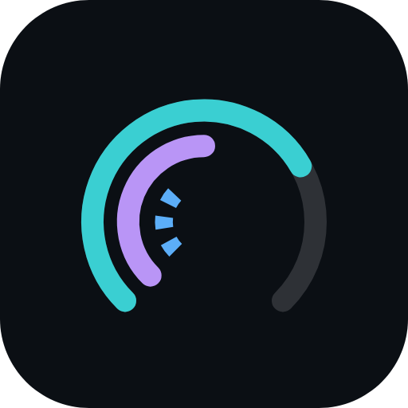
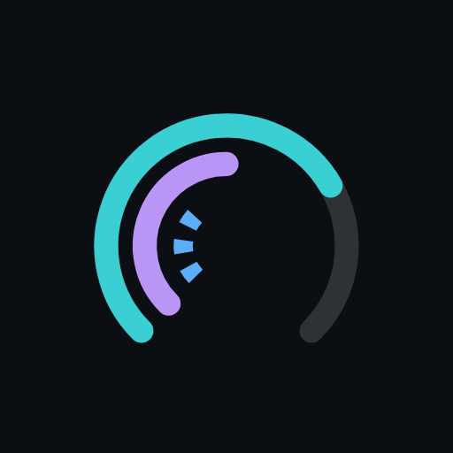

The chosen mark with its monochrome variant, favicon geometry, app icons and the one wordmark used everywhere. Files are in assets/; the live component is Logo in components/brand/Logo.jsx.




<!-- relative to the app's base path: favicons, icons and site.webmanifest are served from the app root -->
<link rel="icon" href="favicon.svg" type="image/svg+xml">
<link rel="icon" href="favicon-32.png" sizes="32x32" type="image/png">
<link rel="icon" href="favicon-16.png" sizes="16x16" type="image/png">
<link rel="apple-touch-icon" href="apple-touch-icon.png"> <!-- 180 × 180, full bleed -->
<link rel="manifest" href="site.webmanifest"> <!-- 192, 512, 512 maskable -->
<meta name="theme-color" content="#0b0f14">
<Logo size={28} /> colour, full mark
<Logo size={28} variant="mono" /> one ink, currentColor
<Logo size={16} /> ≤ 20 px switches to the favicon geometry
<Logo size={28} wordmark href="/" /> mark + wordmark, home link
Seven directions for the BitGauge mark. Each is shown on the dark app surface, on light paper, in one colour, at favicon sizes, and as a horizontal lockup. Teal is the download series colour; 1f also uses upload violet and latency blue.
{{ o.note }}